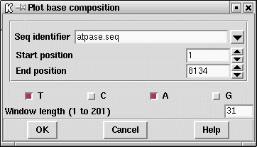

The composition of the sequence can be displayed graphically. A window is slid along the sequence one base at a time, and at each point the number of occurrences of each selected base type is counted and plotted. Users can select which base types are counted, the size of the window used and the region of the sequence to analyse.
For
example the A and T composition can be plotted by selecting base
types A and T in the dialogue. As usual the values can also be listed in
the text Output Window. Note that this "result", i.e. the base
composition counts for every position along the sequence, will persist
until the user explicitly removes it. To save memory delete results as
soon as they are no longer required.

![[picture]](spin_plot_base_comp_p,6in.png.html)
(Click for full size image)
Last generated on 25 April 2016.